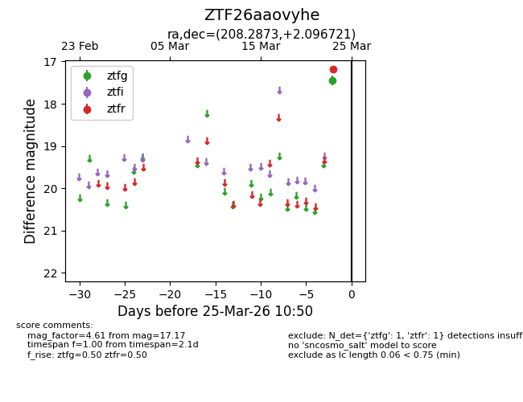
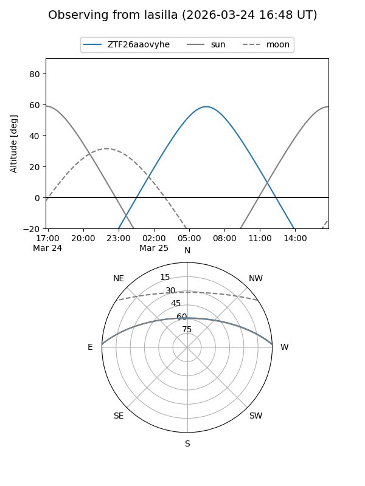
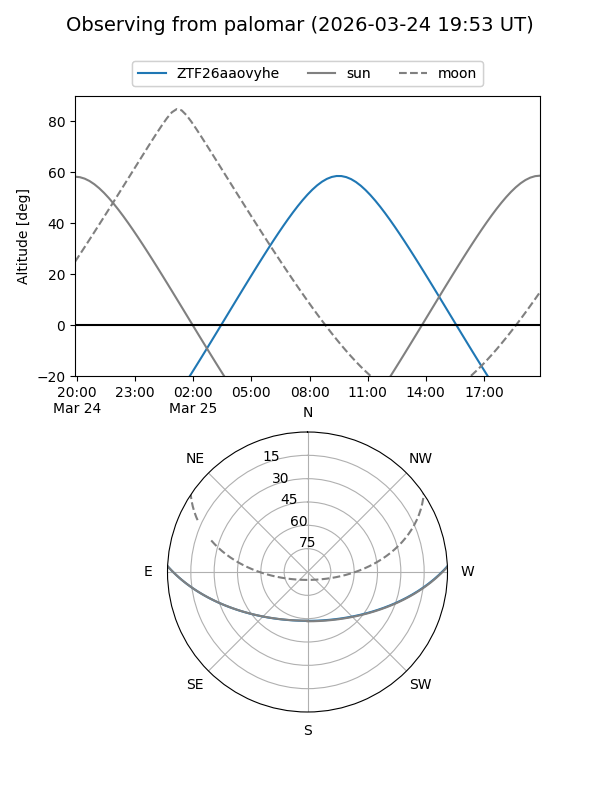

ZTF26aaovyhe
Target ZTF26aaovyhe at 2026-03-25 10:53
Aliases and brokers:
FINK: link
Lasair: link
ALeRCE: link
alt names
ZTF26aaovyhe (ztf,fink_ztf)
Coordinates:
equatorial (ra, dec) = 208.2873,+2.09672
equatorial (HMS+DMS) = 13:53:08.96,+02:05:48.19
galactic (l, b) = (336.1035,+60.93002)
Flags:
Photometry:
last ztfg=17.45, ztfr=17.17
1 ztfg, 1 ztfr detections
Lightcurve

Visibility


Additional plots